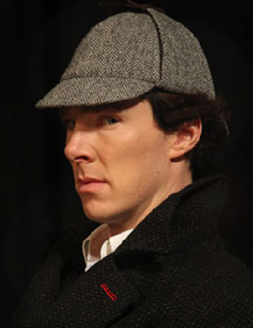

A character in BBC One drama, Sherlock, Dr John Watson writes about the six Thatchers
John Watson is no longer updating this blog. For the latest Sherlock content on the BBC go to the Sherlock programme website
19th December
The Six Thatchers
I'd taken Sherlock out Christmas shopping which, looking back, wasn't the best of ideas. He'd shouted at a Father Christmas that he was bored and wanted a nice juicy murder for Christmas - in front of a bunch of kids and their parents. Escorted back to the flat by the police, we found a student, Sally Barnicot, waiting for us.
After Sherlock had managed to insult her about her looks and the way she was dressed, she told us about a murder that had taken place at her university. Pietro Venucci, an art student, and Sally's best friend had been found stabbed in the pottery room. His boyfriend, Beppo Rovito, was discovered next to the body and told the police that he'd just discovered him. A smashed window seemed to confirm that someone had broken in and as there was no knife on Beppo or in the room, he'd been released from custody. Sally was convinced that Beppo did it as he and Pietro had had a fiery relationship. It didn't take Sherlock Holmes to work out that she'd also been in love with Pietro. Sherlock was instantly on the internet and was thrilled to discover that there had been a number of burglaries at houses belonging to a couple of students, a lecturer and a friend of the victim. He had, of course, already worked it all out.
Sherlock requested, or rather ordered, me to go to the university, pretending to be a curator from the Hickman Gallery. I told the art lecturer, Horace Harker, that I was interested in displaying some students' work - especially pieces of sculpture. Naturally, the murder came up in conversation and I asked if the victim had been working on anything in particular as we could display it as a nice tribute to him. Harker said that Pietro had made six pottery figures of Maggie Thatcher before he died. They were like those ones you see of Princess Diana advertised in magazines only they had devil horns. This was satire, apparently. The figures, Harker told me sadly, had already been taken.
We went to visit the people who'd been burgled and it turns out that they'd all bought one of the Thatcher figures. Nothing else had been taken during the break-ins which, again, was what Sherlock had expected to hear. We found the addresses of the people who owned the remaining two figures and contacted them. That night, I took one address and Sherlock the other.
I sat there, in the dark and waited. Then, hearing the sound of a window breaking, I hid. I watched as Beppo broke in and found the figure on the mantlepiece. I followed him outside and called Sherlock who joined me. We followed him to a bridge and watched as he smashed the figure to the ground. Something was inside it which he picked up, ready to throw in the river. Before he could, we stopped him and found that he was holding a penknife with his initials on it.
Knowing that it was all over, he confessed immediately. He and Pietro had had an argument and, in a struggle, Beppo had stabbed him. He'd seen the figures were about to go into the oven and had pushed the knife into the clay. He'd then smashed a window to make it look like there'd been a break-in.
I thought that what he'd done was pretty clever but Sherlock described as disappointingly simple. The next day he spent so much time going on about how he'd have got away with it that I went to the pub and left him talking to a frozen turkey.
Oh, and he's still getting those texts.
2 comments
Brilliant!!
Jacob Sowersby 19 December 16:12
About me

I am an experienced medical doctor recently returned from Afghanistan.
My photos

Most popular posts
- A New Beginning
- A Few Pictures...
- Hat-Man and Robin
- The Great Game
- Diamonds are forever
- My new flatmate
- A strange meeting
- Serial suicides
disappointingly simple
theimprobableone 19 December 15:47